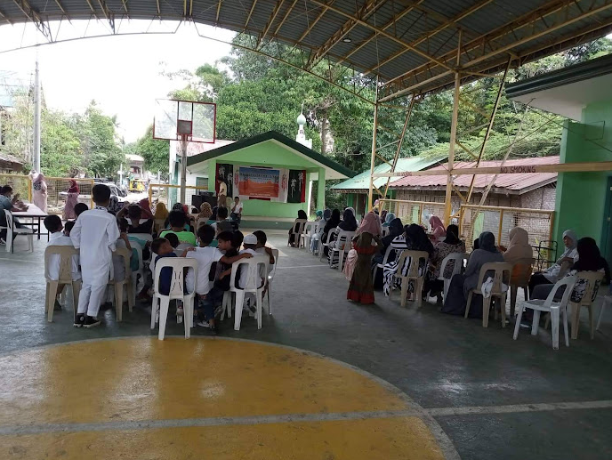

Project Summary
The project was initiated and identified to enhance our sense of social responsibility as junior high school students. The project is focused on the partner institution that we are assigned. This partner institution is the Madrasatos Salam Al -Islamia, an Islamic school located in Maa, Davao City. This institution has several challenges as they operate for the benefit of the Muslim children within the community. Our group identified these challenges and eventually became the focus of this project. The objectives of the project are to identify, evaluate and assist the situation and needs of the institution while the goals are to facilitate and extend aid from different stakeholders to alleviate the present situation of the institution. The realization of this project will benefit primarily the Muslim children and the staff of the institution. It will bring ease and comfort to the community as the problems were perennial to them. This project will be feasible at the end of the second quarter of the present school year of AdDU - JHS.The challenges that the project faces are the lack of finances, restrictions due to the pandemic, project team members being in different places, and time constraints. The risk that we identified is the recurrence of flooding in the location of the institution which eventually destroys the facility inside it.
Community Profile
Population number: 160 Enrollees, 6 Islamic Teachers, and 1 volunteer
Age ranges: Students from Kinder to Grade 6. They are between 4 to 16 years old.
Family background: Before the institution was established, there were 5 groups that were actively organizing the activities and programs for the purpose of teaching Islamic practices for children of the Muslim community. Time passed, and other groups decided to create a madrasah to extend in other areas.
Current occupation / source of income: Non - profit institution but they are getting a voluntary minimal fee of PHP250 per family regardless of the number of the children enrolled by the family.
Place of origin: The place of origin is its current place: Purok 20, Sanggilangan Ma-a Davao City.
Rationale

The project is very important as it will build the capacity of local people to prepare, mitigate and recover from floods. It helps in taking action to build safety and resilience, and reduce future hazard impacts. The project will ensure that there is a continuous flow of school activities at the primary school as no classroom will be used as an evacuation shelter. The project will further improve issues of sanitation among the displaced as toilets will be part of the project. With the implementation of the project, the government and the donor community will serve the money for other equally important development issues as the shelter will offer a permanent home for the displaced people unlike tents which needs to be donated every year since they wear out easily.
Project Outcomes

Our project focuses on three things: to provide a proper source of water and toilets in the community, and to improve the quality of education taught and received.
The specific objectives of the project are:
1. To provide functioning toilets.
2. To provide the teachers and students with proper materials.
3. To more water accessible in the community
4. To promote hygiene and cleanliness
5. To promote accessible good education to the community.
Back to Top